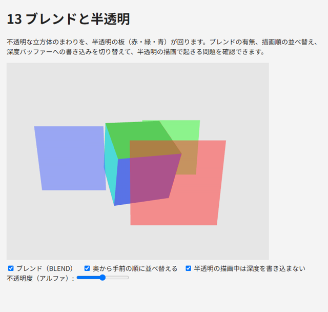
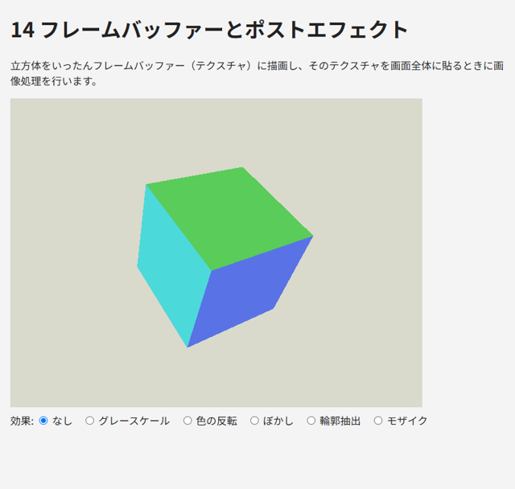
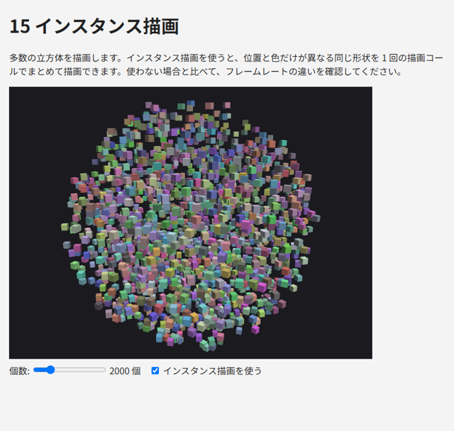
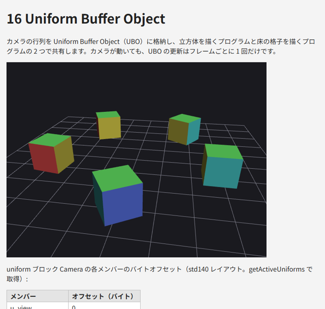

12. 応用技法
この章では、半透明の描画、画面以外への描画、多数の物体の効率的な描画など、実用的なプログラムでよく使う技法を説明します。また、本書で扱わない WebGL 2.0 の機能と、拡張機能の仕組みを紹介します。
12.1. ブレンドと半透明
ガラスや煙のような半透明の物体を描くには、フラグメントシェーダーが出力した色（ソース）と、フレームバッファーにすでにある色（デスティネーション）を混ぜ合わせます。これをブレンドと呼びます。
ブレンドを有効にすると、GPU は次の式で新しい色を求めます。
係数 \(F_{\mathrm{src}}\) と \(F_{\mathrm{dst}}\) は gl.blendFunc で指定します。半透明の描画で最もよく使うのは、ソースのアルファ \(\alpha\) を不透明度として使う組み合わせです。
1gl.enable(gl.BLEND);
2gl.blendFunc(gl.SRC_ALPHA, gl.ONE_MINUS_SRC_ALPHA);
canvas のアルファに注意する
上の gl.blendFunc は、色だけでなくアルファにも同じ式を適用します。アルファが 1 の背景に \(\alpha = 0.5\) で描くと、結果のアルファは \(0.5 \times 0.5 + 1 \times 0.5 = 0.75\) になります。コンテキスト属性 alpha が true（既定値）の場合、canvas のアルファが 1 未満のピクセルでは背後の Web ページが透けて見えてしまいます。
これを防ぐには、gl.blendFuncSeparate で色とアルファに別々の係数を指定し、アルファが 1 のまま保たれるようにします。または、透けて見える必要がなければ、コンテキストを { alpha: false } で作ります。
1// 色: src × α + dst × (1 - α)、アルファ: src × 1 + dst × (1 - α)
2gl.blendFuncSeparate(gl.SRC_ALPHA, gl.ONE_MINUS_SRC_ALPHA, gl.ONE, gl.ONE_MINUS_SRC_ALPHA);
描画順と深度
ブレンドの結果は描画の順序に依存します。また、深度テストとの組み合わせにも注意が必要です。半透明の物体を正しく描くための一般的な手順は次のとおりです。
不透明な物体をすべて描きます（ブレンドは無効、深度の書き込みは有効）。
半透明の物体を、カメラから遠い順に並べ替えます。
ブレンドを有効にし、
gl.depthMask(false)で深度の書き込みを無効にして、半透明の物体を遠い順に描きます。
手前の半透明の物体を先に描くと、その深度が深度バッファーに書き込まれ、後から描く奥の物体が深度テストで捨てられてしまいます。遠い順に描けばこの問題は起きませんが、物体どうしが交差している場合などは並べ替えだけでは解決できないため、gl.depthMask(false) を併用して影響を小さくします。それでも完全には正しくならない場合があり、半透明の正確な描画は 3D グラフィックスの難しい問題の 1 つです。
13_blend.html は、不透明な立方体のまわりを半透明の板が回るサンプルです。ブレンド、並べ替え、深度の書き込みを切り替えて、それぞれの効果を確認できます。並べ替えをオフにして深度の書き込みも有効にすると、板が重なったときに奥の板が欠けて見えます。
319 // 1. 不透明な物体を先に描く（ブレンドなし、深度を書き込む）
320 gl.disable(gl.BLEND);
321 gl.depthMask(true);
322 gl.uniform1i(uniforms.u_useVertexColor, 1);
323 const cubeModel = mat4.multiply(mat4.rotationY(seconds * 0.5), mat4.rotationX(0.4));
324 gl.uniformMatrix4fv(uniforms.u_modelViewProjection, false, mat4.multiply(viewProjection, cubeModel));
325 gl.bindVertexArray(cube.vao);
326 gl.drawElements(gl.TRIANGLES, cube.indexCount, gl.UNSIGNED_SHORT, 0);
327
328 // 2. 半透明の板を描く
329 if (checked("blend")) {
330 gl.enable(gl.BLEND);
331 // 色: 新しい色 × α + 既存の色 × (1 - α)
332 // アルファ: canvas が透けないよう、結果のアルファが 1 のまま保たれる係数にする
333 gl.blendFuncSeparate(gl.SRC_ALPHA, gl.ONE_MINUS_SRC_ALPHA, gl.ONE, gl.ONE_MINUS_SRC_ALPHA);
334 }
335 gl.depthMask(!checked("depthMask"));
336 gl.uniform1i(uniforms.u_useVertexColor, 0);
337
338 const quads = quadColors.map((color, i) => {
339 const angle = seconds * 0.7 + i * Math.PI * 2 / 3;
340 const model = mat4.translation(Math.sin(angle) * 1.2, 0, Math.cos(angle) * 1.2);
341 // ビュー座標系での z（負の値が大きいほど奥）
342 const viewZ = mat4.transformVec4(mat4.multiply(view, model), [0, 0, 0, 1])[2];
343 return { color, model, viewZ };
344 });
345 if (checked("sort")) {
346 quads.sort((a, b) => a.viewZ - b.viewZ); // 奥（z が小さい）から順に
347 }
348 gl.bindVertexArray(quad.vao);
349 // ブレンドしない場合は、canvas 自体が透けないようにアルファを 1 にする
350 const outputAlpha = checked("blend") ? alpha : 1.0;
351 for (const { color, model } of quads) {
352 gl.uniform4f(uniforms.u_color, color[0], color[1], color[2], outputAlpha);
353 gl.uniformMatrix4fv(uniforms.u_modelViewProjection, false, mat4.multiply(viewProjection, model));
354 gl.drawElements(gl.TRIANGLES, quad.indexCount, gl.UNSIGNED_SHORT, 0);
355 }

図 12.1 13_blend.html の実行結果
12.2. フレームバッファー
ここまでは、描画結果をすべて canvas に表示していました。WebGL では、描画先を画面に表示しないバッファーに切り替えることもできます。描画先となるフレームバッファーオブジェクトを作り、そこにテクスチャを取り付けると、描画結果をテクスチャとして後から利用できます。これをオフスクリーンレンダリングと呼びます。
フレームバッファーには、色・深度・ステンシルの書き込み先（アタッチメント）を取り付けます。書き込み先には、テクスチャかレンダーバッファーを使います。後でシェーダーから読む必要がある場合はテクスチャを、読む必要がない場合（深度など）はレンダーバッファーを使います。
330// カラーテクスチャと深度レンダーバッファーを持つフレームバッファーを作る
331function createRenderTarget(gl, width, height) {
332 // 色の書き込み先: テクスチャ（あとでシェーダーから読むため）
333 const colorTexture = gl.createTexture();
334 gl.bindTexture(gl.TEXTURE_2D, colorTexture);
335 gl.texStorage2D(gl.TEXTURE_2D, 1, gl.RGBA8, width, height);
336 gl.texParameteri(gl.TEXTURE_2D, gl.TEXTURE_MIN_FILTER, gl.LINEAR);
337 gl.texParameteri(gl.TEXTURE_2D, gl.TEXTURE_MAG_FILTER, gl.LINEAR);
338 gl.texParameteri(gl.TEXTURE_2D, gl.TEXTURE_WRAP_S, gl.CLAMP_TO_EDGE);
339 gl.texParameteri(gl.TEXTURE_2D, gl.TEXTURE_WRAP_T, gl.CLAMP_TO_EDGE);
340
341 // 深度の書き込み先: レンダーバッファー（シェーダーから読まないため）
342 const depthBuffer = gl.createRenderbuffer();
343 gl.bindRenderbuffer(gl.RENDERBUFFER, depthBuffer);
344 gl.renderbufferStorage(gl.RENDERBUFFER, gl.DEPTH_COMPONENT24, width, height);
345
346 const framebuffer = gl.createFramebuffer();
347 gl.bindFramebuffer(gl.FRAMEBUFFER, framebuffer);
348 gl.framebufferTexture2D(gl.FRAMEBUFFER, gl.COLOR_ATTACHMENT0, gl.TEXTURE_2D, colorTexture, 0);
349 gl.framebufferRenderbuffer(gl.FRAMEBUFFER, gl.DEPTH_ATTACHMENT, gl.RENDERBUFFER, depthBuffer);
350 const status = gl.checkFramebufferStatus(gl.FRAMEBUFFER);
351 gl.bindFramebuffer(gl.FRAMEBUFFER, null);
352 if (status !== gl.FRAMEBUFFER_COMPLETE) {
353 throw new Error(`フレームバッファーが不完全です（状態: 0x${status.toString(16)}）`);
354 }
355 return { framebuffer, colorTexture, width, height };
356}
gl.texStorage2D は、WebGL 2.0 で追加された、大きさと形式を固定したテクスチャの領域を確保する関数です。gl.texImage2D にデータとして null を渡して領域だけを確保する方法もあります。
フレームバッファーの設定に誤りがあると、描画しても何も起きません。gl.checkFramebufferStatus で gl.FRAMEBUFFER_COMPLETE が返ることを確認してください。
描画先は gl.bindFramebuffer で切り替えます。null をバインドすると、canvas の描画バッファー（既定のフレームバッファー）に戻ります。描画先の大きさが変わるので、gl.viewport も合わせて設定し直します。
ポストエフェクト
フレームバッファーの代表的な用途が、描画結果に画像処理を施すポストエフェクトです。シーンをいったんテクスチャに描画し、次にそのテクスチャを画面全体に貼る際に、フラグメントシェーダーで色を加工します。
画面全体を覆うには、画面より大きな三角形を 1 つ描くのが簡単です。WebGL 2.0 では、頂点シェーダーの組み込み変数 gl_VertexID（頂点の番号）から座標を計算できるので、頂点バッファーも不要です。
61const POST_VS = `#version 300 es
62out vec2 v_uv;
63
64void main() {
65 // 0 → (0, 0)、1 → (2, 0)、2 → (0, 2)
66 vec2 uv = vec2(float((gl_VertexID << 1) & 2), float(gl_VertexID & 2));
67 v_uv = uv;
68 gl_Position = vec4(uv * 2.0 - 1.0, 0.0, 1.0);
69}
70`;
頂点 0、1、2 の uv はそれぞれ (0, 0)、(2, 0)、(0, 2) になり、クリップ座標では (-1, -1)、(3, -1)、(-1, 3) の三角形になります。画面（-1 ～ 1 の正方形）の外にはみ出した部分はクリッピングで捨てられます。
フラグメントシェーダーでは、textureSize 関数でテクスチャの大きさを取得し、隣のテクセルを参照するためのオフセットを求めています。
14_framebuffer.html では、グレースケール、色の反転、ぼかし、輪郭抽出（Sobel フィルター）、モザイクの効果を切り替えられます。

図 12.2 14_framebuffer.html の実行結果
12.3. インスタンス描画
草や木、群衆、パーティクルのように、同じ形状を位置や色だけ変えて大量に描きたいことがあります。物体ごとに uniform 変数を設定して描画関数を呼ぶと、描画コール（描画関数の呼び出し）の回数が物体の数だけ増えます。描画コールには CPU 側のオーバーヘッドがあるため、数千回を超えると性能が大きく低下します。
インスタンス描画を使うと、同じ形状を 1 回の描画コールで多数描けます。描画される各コピーをインスタンスと呼びます。インスタンスごとに異なる値（位置や色など）は、次のどちらかの方法で頂点シェーダーに渡します。
インスタンスごとに値が進む頂点属性を使います。
gl.vertexAttribDivisor(location, 1)を設定すると、その頂点属性は頂点ごとではなく、1 インスタンスごとに次の値へ進みます。組み込み変数
gl_InstanceID（インスタンスの番号）を使い、シェーダー内で値を計算します。
285 // インスタンス描画用の VAO: location 2, 3 をインスタンスバッファーから読む
286 const instancedVao = gl.createVertexArray();
287 gl.bindVertexArray(instancedVao);
288 setupShapeAttributes();
289 const stride = 6 * Float32Array.BYTES_PER_ELEMENT;
290 gl.bindBuffer(gl.ARRAY_BUFFER, instanceBuffer);
291 gl.enableVertexAttribArray(2);
292 gl.vertexAttribPointer(2, 3, gl.FLOAT, false, stride, 0);
293 gl.vertexAttribDivisor(2, 1); // 1 インスタンスごとに次の値へ進む
294 gl.enableVertexAttribArray(3);
295 gl.vertexAttribPointer(3, 3, gl.FLOAT, false, stride, 3 * Float32Array.BYTES_PER_ELEMENT);
296 gl.vertexAttribDivisor(3, 1);
描画には gl.drawArraysInstanced または gl.drawElementsInstanced を使い、最後の引数にインスタンスの数を指定します。
1gl.drawElementsInstanced(gl.TRIANGLES, CUBE.indices.length, gl.UNSIGNED_SHORT, 0, count);
15_instancing.html は、最大 10000 個の立方体を描きます。「インスタンス描画を使う」をオフにすると、立方体 1 個ごとに描画コールを発行する方法に切り替わります。個数を増やしたときのフレームレートを比べてみてください。

図 12.3 15_instancing.html の実行結果
12.4. Uniform Buffer Object
カメラの行列や光源の情報は、多くのプログラムで共通に使います。通常の uniform 変数はプログラムごとに値を保持するので、プログラムが複数あると、同じ値をプログラムごとに設定する必要があります。
Uniform Buffer Object（UBO）を使うと、複数の uniform 変数をバッファーにまとめ、複数のプログラムで共有できます。シェーダーでは、共有する変数を uniform ブロックとして宣言します。
34const CAMERA_BLOCK = `
35layout(std140) uniform Camera {
36 mat4 u_view;
37 mat4 u_projection;
38 vec3 u_cameraPosition; // std140 では vec3 も 16 バイト境界に配置される
39};
40`;
JavaScript 側の手順は次のとおりです。
各プログラムの uniform ブロックを、
gl.uniformBlockBindingで番号付きのバインディングポイントに結び付けます。バッファーを作り、
gl.bindBufferBase(gl.UNIFORM_BUFFER, 番号, バッファー)で同じバインディングポイントに結び付けます。バッファーの内容を
gl.bufferSubDataで更新します。更新した値は、そのブロックを使うすべてのプログラムに反映されます。
313 // 各プログラムの uniform ブロック Camera をバインディングポイント 0 に結び付ける
314 for (const program of [cubeProgram, gridProgram]) {
315 const blockIndex = gl.getUniformBlockIndex(program, "Camera");
316 gl.uniformBlockBinding(program, blockIndex, CAMERA_BINDING);
317 }
318
319 // ブロックの大きさと各メンバーのオフセットを WebGL に問い合わせる
320 const blockIndex = gl.getUniformBlockIndex(cubeProgram, "Camera");
321 const blockSize = gl.getActiveUniformBlockParameter(cubeProgram, blockIndex, gl.UNIFORM_BLOCK_DATA_SIZE);
322 const memberNames = ["u_view", "u_projection", "u_cameraPosition"];
323 const indices = gl.getUniformIndices(cubeProgram, memberNames);
324 const offsets = gl.getActiveUniforms(cubeProgram, indices, gl.UNIFORM_OFFSET);
325 const offset = {};
326 memberNames.forEach((name, i) => {
327 offset[name] = offsets[i];
328 const row = document.getElementById("layout").insertRow();
329 row.insertCell().textContent = name;
330 row.insertCell().textContent = offsets[i];
331 });
332 document.getElementById("blockSize").textContent = `ブロック全体の大きさ: ${blockSize} バイト`;
333
334 // UBO を作り、バインディングポイント 0 に結び付ける
335 const cameraBuffer = gl.createBuffer();
336 gl.bindBuffer(gl.UNIFORM_BUFFER, cameraBuffer);
337 gl.bufferData(gl.UNIFORM_BUFFER, blockSize, gl.DYNAMIC_DRAW);
338 gl.bindBufferBase(gl.UNIFORM_BUFFER, CAMERA_BINDING, cameraBuffer);
339 const cameraData = new Float32Array(blockSize / 4);
std140 レイアウト
バッファーの中で各変数をどの位置（オフセット）に置くかは、レイアウトの規則で決まります。layout(std140) を指定すると、決まった規則で配置されます。主な規則は次のとおりです。
float、intは 4 バイト境界、vec2は 8 バイト境界に置かれます。vec3とvec4は 16 バイト境界に置かれます。vec3の直後に 4 バイトの隙間ができることに注意します（隙間には次のfloatが入ることもある）。mat4は 16 バイト境界から始まる 4 つのvec4（列）として置かれます。配列の各要素は 16 バイト境界に置かれます。
floatの配列でも 1 要素あたり 16 バイトを使います。
規則を覚えて自分で計算することもできますが、gl.getActiveUniforms(program, indices, gl.UNIFORM_OFFSET) で各変数のオフセットを WebGL に問い合わせれば確実です。サンプルでは、問い合わせた結果をページに表示しています。
なお、uniform ブロックを頂点シェーダーとフラグメントシェーダーの両方で宣言する場合は、精度修飾子を含めて同じ宣言にする必要があります。サンプルでは、ブロックを使うフラグメントシェーダーの既定の精度を highp にして、頂点シェーダーと一致させています。
16_ubo.html では、カメラの行列を UBO に格納し、立方体を描くプログラムと床の格子を描くプログラムで共有しています。

図 12.4 16_ubo.html の実行結果
12.5. その他の WebGL 2.0 の機能
本書のサンプルでは扱いませんが、WebGL 2.0 には次のような機能もあります。
機能 |
概要 |
|---|---|
複数レンダーターゲット（MRT） |
フレームバッファーに複数のカラーアタッチメントを取り付け、フラグメントシェーダーの複数の |
3D テクスチャ、テクスチャ配列 |
|
Transform Feedback |
頂点シェーダーの出力をバッファーに書き戻します。GPU 上でパーティクルの位置を更新する場合などに使います |
サンプラーオブジェクト |
フィルタリングやラッピングの設定をテクスチャから切り離して管理します |
マルチサンプルのレンダーバッファー |
|
クエリーオブジェクト、フェンス |
描画したピクセルの数を調べたり（オクルージョンクエリー）、GPU の処理の完了を待ったりします |
12.6. 拡張機能
WebGL の仕様に含まれない機能は、拡張機能として提供されます。拡張機能を使うには、gl.getExtension に拡張機能の名前を渡します。環境が対応していない場合は null が返るので、必ず確認してから使います。
1const ext = gl.getExtension("EXT_color_buffer_float");
2if (!ext) {
3 // 対応していない場合の代替処理
4}
getExtension を呼ぶまで、その拡張機能は有効になりません。利用できる拡張機能の一覧は gl.getSupportedExtensions() で取得でき、第 2 章のサンプル 01_check_support.html で確認できます。WebGL 2.0 でよく使われる拡張機能を表 12.2 に示します。
名前 |
内容 |
|---|---|
|
浮動小数点数のテクスチャやレンダーバッファーを、フレームバッファーの書き込み先にできます（HDR の描画などに使う） |
|
32 ビット浮動小数点数のテクスチャで |
|
異方性フィルタリング。斜めから見た面のテクスチャを、ミップマップよりも鮮明に表示します |
|
コンテキストロストを意図的に起こす（テスト用。第 14 章） |
|
GPU での処理時間を計測します（プライバシー保護のため、無効にしているブラウザーもあります） |